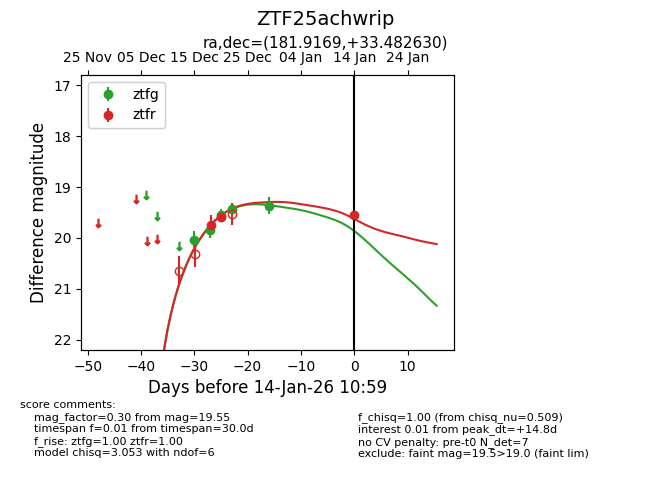
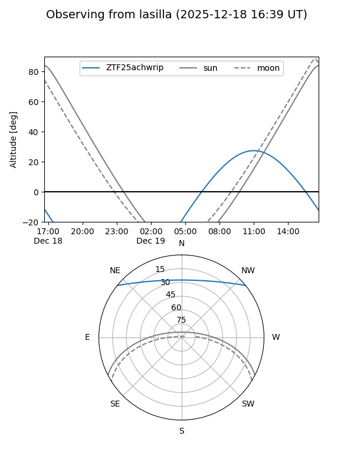
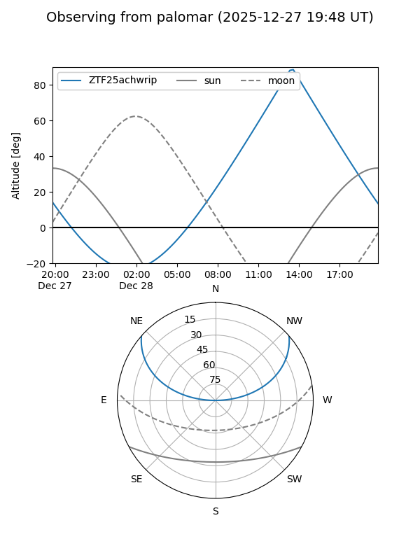

ZTF25achwrip
Target ZTF25achwrip at 2025-12-31 18:00
Aliases and brokers:
FINK: link
Lasair: link
ALeRCE: link
alt names
ZTF25achwrip (ztf,fink_ztf)
Coordinates:
equatorial (ra, dec) = 181.9169,+33.48256
equatorial (HMS+DMS) = 12:07:40.05,+33:28:57.20
galactic (l, b) = (176.3298,+78.62575)
Flags:
Photometry:
last ztfg=19.37, ztfr=19.59
5 ztfg, 2 ztfr detections
Lightcurve

Visibility


Additional plots